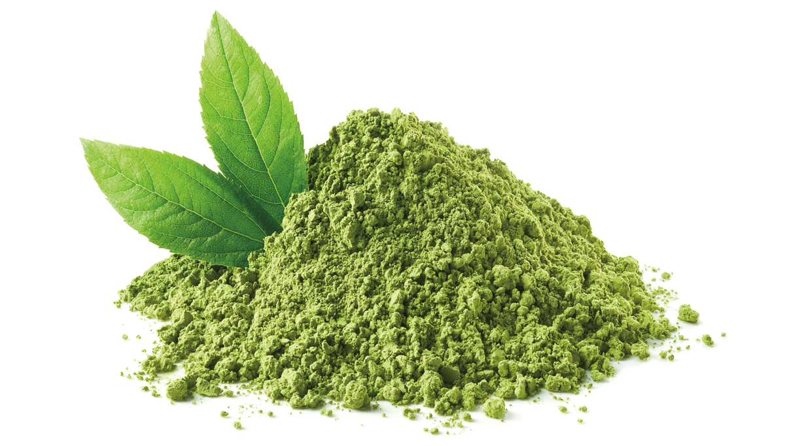
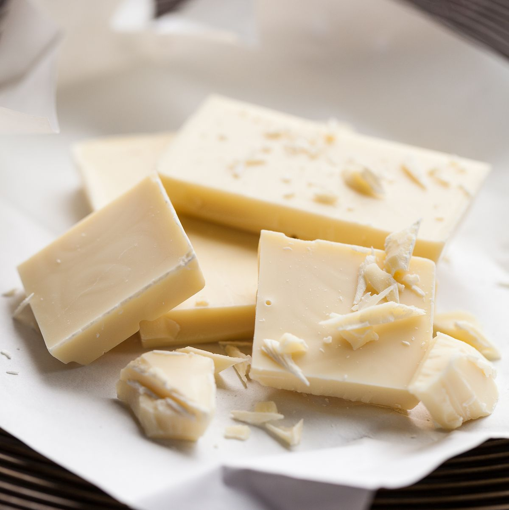
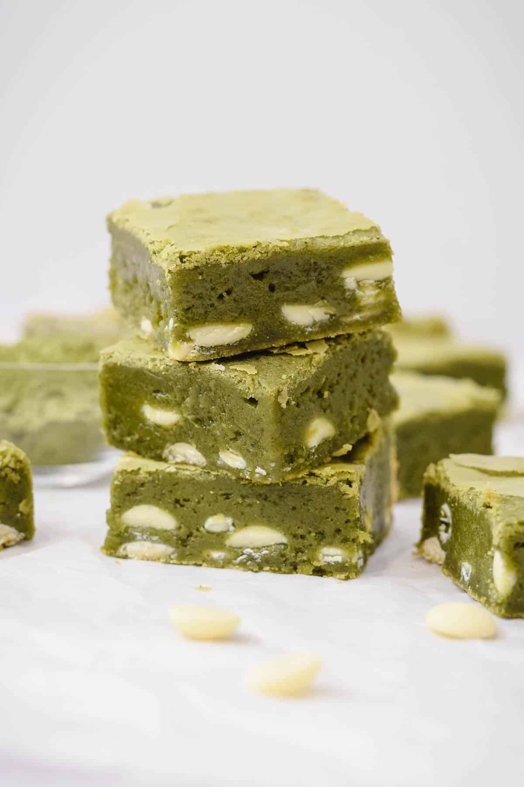

Step 1
- Prepare a 8x8 baking sheet with parchment paper
- Preheat a oven to 350 degrees

Step 2
Sift flour, matcha, baking powder, salt till combined
Step 3
- microwave at 300 watts for 1 & 1/2 minuets
- stir chocolate until there are no lumps
- beat eggs into chocolate until uniform
- add sugar and vanilla into this mix until smooth 
Step 4
Pour wet ingridents into dry and mix until smoothStep 5
Dump batter into baking tray and bake for 18-20 minuetsStep 6
Remove brownies from baking tray using parchment paper to cool
